contents | previous | next THOUGH, on account of the tide, the embarkation was troublesome, and though the surge ran high, as the boat made its way to the ship, yet Rosalie, who now no longer doubted of her escape, was unconscious of inconveniences, which, at another time, would have alarmed her. The moment they were safely on board the Maltese vessel, Walsingham expressed his satisfaction in a manner that gave Rosalie the most favourable impressions of the goodness of his heart, and the sincerity of his professions; while the Chevalier de Montagny welcomed her with all the politeness and urbanity, for which military men of a certain age, and of his nation, were once so justly esteemed. He entreated her to consider herself as
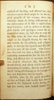 View image of 62mistress of the ship, and assured her, that whatever merit there might be in the original purpose of his voyage, there was infinitely more in being instrumental to the deliverance of so fair a captive from imprisonment; and in answer to the mingled thanks and apologies which she attempted to utter, he said that he only did his duty when he lent what assistance he could to his English friend, for that he was bound, by his military and religious oath, to succour the injured and distressed in every part of the world. The Chevalier then led her into a small state cabin, extremely commodious for the size of the ship, and assured her it was hers till she was landed wherever Mr. Walsingham should direct, and about which they were then going to consult; that he would only direct some refreshment to be brought to her, and then leave her to repose. Rosalie, who, by the quick succession of fear and hope, had hardly had time to recollect her scattered senses during the last few hours, now looked round her,
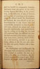 View image of 63and saw herself in comparative security. Delivered from the power of the unrelenting Signora Belcastro, in the protection, as she believed, of men of honour, and in a way of returning to her country, where she assured herself she should meet her husband, she now offered up her acknowledgements to that Power who had miraculously interposed to save her; her full heart, relieved by prayer and tears, beat less tumultuously, and, notwithstanding the rolling of the ship, for the wind still continued high, she suffered less than she had ever done at sea before; and even slept many hours, awaking much refreshed in the morning, and able to go upon deck, where, as the sea was now calm, the sails only gently swelled with a summer breeze. Mr. Walsingham and the Chevalier de Montagny both attended her, and she very soon learned to consider the one as a father, the other as a brother; for the former was nearly fifty years of age. Walsingham no longer made those speeches
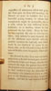 View image of 64expressive of admiration which had given her some pain on their first meeting; he seemed no more to consider her as a beautiful young woman, to whom such compliments might be acceptable, but as a wife, whom he was restoring to her husband; as a mother, whom he had preserved for her child. Since he knew she was married, she was to him but as a sister; and, indeed, he now repeated, that all his affections were buried with the amiable Leonora he had lost, and whose death he yet deplored in terms so pathetic, that, as she listened to him, the soft eyes of Rosalie were frequently filled with tears. The second day after they were on board, and as soon as Rosalie seemed quite recovered from the fright and fatigue that she had suffered the night she quitted Formiscusa, Walsingham took occasion to tell her, that he had consulted with the Chevalier de Montagny, who submitted to him at what port in the Mediterranean they would be landed; and that he had settled it should
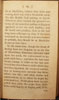 View image of 65be at Marseilles, whither they were now making their way with a favourable wind. To this Rosalie had nothing to object. Wherever there seemed the greatest certainty of an immediate passage to England appeared to her the most eligible; and she heard with pleasure, such as she had long been stranger to, that, if the wind continued as favourable as it now seemed to promise, they should be at Marseilles in two or three days. In the mean time, though the dread of having been too sanguine as to the fate of Montalbert, sometimes obtruded itself upon her mind, she endeavoured to appease these fears; and when she had once found courage to relate to her two new friends the circumstances under which they had been separated, she received consolation in hearing their opinions that Montalbert was safe; and when doubts and apprehensions, as to where he might be, tormented her, Walsingham bade her recollect how easily she might from Marseilles make inquiry at Naples, and, if he
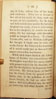 View image of 66was in Italy, inform him of her health and residence. What was to become of her till all this could be done made now no part of her uneasiness; for she hoped and believed the dear mother she had left in England was ready, if not to acknowledge her as her daughter, to receive her as her niece, for her marriage with Montalbert could no longer be a secret. To Charles Vyvian also, and to William Lessington, she thought it might now be told; and to the former she believed the knowledge of it would render her as dear as if their nearer relationship was known. While these hopes soothed the solitary hours of Rosalie, her conversations with Walsingham impressed her every moment with greater respect for his character, and pity for the dejection he frequently seemed to feel. He seldom spoke of himself; but she found, from his general conversation, that, in the possession of an affluent fortune, he had no other satisfaction than as it afforded him the means of bestowing individual benefits on his
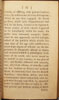 View image of 67 friends, or assisting, with general benevolence, the unfortunate of every description. While he was thus engaged, the heavy pressure, which early disappointment had laid on his heart, seemed to be lightened. When neither of these objects happened to be immediately within his reach, his spirits were extremely unequal; sometimes he was apparently careless and gay, talked of the pursuits which usually occupy men of his age with indifference; threw some degree of ridicule on the importance so frequently affixed to them; and declared himself a philosopher, a citizen of the world, who never meant to fix himself to any country, or any plan of life; and Rosalie observed with concern, that, after these efforts, of what she could not but consider as forced and artificial spirits, he sometimes sunk into the deepest dejection; when silent, absent, and with a countenance where melancholy and regret were strongly expressed, he appeared rather to suffer life than to enjoy it. He had general and brilliant talents, a mind
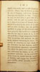 View image of 68 highly cultivate, and a taste elegant and correct. There was no science to which he was a stranger, and every European language was familiar to him. Young as he was, he had seen a great deal of the world; and he had not merely seen it as it appears to a man of fortune, for his devolved to him by the death of an uncle and an elder brother; but was perfectly qualified to judge of the different receptions given by that world to a young man who has his way to make in it, or one who possesses a large independent fortune. This knowledge had matured his judgment, without narrowing his heart. The variety of countries he had visited, and the characters he had studied, rendered his conversation extremely entertaining; for, when his spirits were really good, it was enlivened by flashes of wit, or by anecdotes well told. In his most melancholy hours he would seek the company of Rosalie, and engage her insensibly in conversation, which naturally turned on Montalbert.
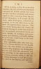 View image of 69Of an evening, as they sat on the deck together, this sort of discourse sometimes continued till Rosalie melted into tears, and till, her fears awakened and encouraged by thus recounting them, she deplored Montalbert as if certain of his death, while Walsingham, instead of attempting, as he had often done, to dissipate her apprehensions, wept too. The tears slowly stealing down his cheeks, till suddenly starting, he would seem to recollect the weakness, and indeed cruelty, towards Rosalie, of indulging and encouraging such emotions, and hastily bidding her good night, would hurry to the cabin of De Montagny. This respectable man, who had conceived a sincere affection for his English friend, had, when Rosalie was first mentioned to him, imagined, that Walsingham had met with some fair adventurer, and was, according to the usual morality of his country, extremely willing to assist him in taking advantage of such a meeting; but when he saw Rosalie, and had con-
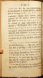 View image of 70versed with her, he was convinced that he had formed a wrong opinion, and began to be apprehensive lest such an acquaintance should have serious consequences for his friend. When he did not make a third in their conversations, he judged of what had passed by the manner of Walsingham after them. The third or fourth day of their voyage, which, for want of wind, was lengthened beyond what he had expected, he took occasion to ask Walsingham, very seriously, what he meant to do with his fair countrywoman? "What I mean to do with her? (replied Walsingham).....Nay, but, my dear Sir, what a question is that?—To restore her certainly to her friends in England!—to this happy Montalbert, if he be living!" "If you do so, my friend, (said De Montagny), let your name be enrolled by the side of Scipio's, for assuredly your merit will be as great." "Not at all!—Scipio was enchanted by the beauty of his captive, or there would
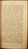 View image of 71have been no merit in restoring her to her lover. Now I am not enchanted with the beauty of Mrs. Montalbert, superior as I acknowledge it to be to that of most women I have seen; therefore I shall have no merit in acting by her, as I ought, indeed, to act, even if I were enamoured of her. But you know, Chevalier, that to me the most lovely women are become mere objects of admiration, like the pictures and statues of Italy." "Indeed I do not know, nor can I believe any such thing, my friend.—For example, I know not how to imagine, that, if this lady had been an antiquity, such as you professed to search for among the ruins of Formiscusa, that you would have stormed the castle for her relief." "It would not have been necessary; but in fact it is begging the question, for had not the lady been young and handsome, she would never have been imprisoned there. However, Chevalier, I trust that any woman in distress would have commanded my services, as I am sure she
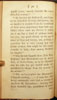 View image of 72would yours, merely because she was a distressed woman." "My services are dedicated, you know, to the distressed of every description; but to damsels in trouble I can be considered of little more importance than their confessors when once my service is ended, for I am but a kind of military monk: but you, my good friend, at the age of three or four and twenty, are, perhaps, a protector for a very young and very pretty woman, who might be less exceptionable in Italy, than among Messieurs les Anglais." "You do not suppose then (said Walsingham) that Montalbert can be such a fool, or such a brute, as to be displeased that his wife has put herself under my protection to escape from the tyranny of his mother?" "Oh, no!—(replied De Montagny); I suppose nothing......I only fear, that being continually with such a woman as Madame de Montalbert; hearing from those beautiful lips, professions of grati-
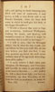 View image of 73tude, and gazing on those charming eyes, filled with tears of tenderness, it may prove, at last, a very severe trial to my friend's fortitude, when the hour shall come in which he must give her back to this happy Montalbert." "Would to Heaven that were to happen to-morrow, (answered Walsingham, clasping his hands, and speaking with warmth)—would to Heaven it might be to-morrow that I could see her happy!" "I wish it were, (said De Montagny drily); but if, when the time is past, you can inform me that you really felt, as you now believe you shall then feel, I may then proclaim my friend the most extraordinary man of his age in the three kingdoms of his master." "I verily believe I shall claim you eulogium, De Montagny, and I here promise honestly to relate to you what passes in my heart at that time.....Ah! (added he, with a deep-drawn sigh), you have no conception, my dear Chevalier, of the hold that such an attachment, as mine, to
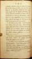 View image of 74a lovely woman, who is now no more, has on the heart.—I say, you can have no idea of it, because, designed from your early youth for the Order of Malta, you never allowed yourself to form such attachments as were at all serious; but I feel it to be impossible ever to love another, and all my hopes of felicity are buried in the grave of my Leonora." "All that is very well. I am sure you now think what you say; but—we have read, and even seen, certain events, that dispose me to believe much in the influence of time and despair, as remedies for these violent passions...........In short - - - - - - - - -" "In short! (interrupted Walsingham); you don't believe the passion can exist when the object is no more?" "I believe it is transferable, my friend, if not curable: I have seen—oh! I know not how many instances of it.......You have read perhaps, or, perhaps, you have seen a little after-piece, on the French stage, called Le Veus?"
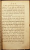 View image of 75"Oh! ( exclaimed Walsingham impatiently), if we were to give up every sentiment as ridiculous, that your writers, or your dramatists, attempt to render so, there would not be left, in the human heart, one virtue to reconcile us to the misery of existence." De Montagny, who meant not to hurt his friend, seeing that he took the matter more seriously than was intended, let the conversation drop, and Walsingham, whose spirits were much agitated, went upon deck, where the stars reflected in the clear expanse of a sea so perfectly calm, that the vessel did not perceptibly move; the stillness of the night, scarcely disturbed by its prow, and the mildness of the air, restored him to a more tranquil state. He bade the steersman and a boy, who was on the first watch, begin the evening hymn sung by the Maltese sailors. He sat down on the gunwale, and bore a part; the tumult of his spirits entirely subsided,
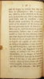 View image of 76 and he began to wonder how they had been so disturbed!—"But it provokes me, (said he, as he reflected on the matter)—it provokes me, that a man of such good sense, and so excellent a heart, should adopt prejudices so entirely the result of the manners of his country, and his own particular mode of education....How can he, with sentiments so generally honourable, believe that I could suffer myself to feel, for this charming woman, any other degree of tenderness than might be inspired by an amiable sister?—No!—to suppose me capable of other views, is to destroy the pleasure I take in protecting and serving her; and why would he rob me of the only happiness I am now capable of tasting?—In love with Mrs. Montalbert, or in danger of becoming so!—Good God! how can he think so?—When I see her, I am calm and contented; when my heart throbs with recollected anguish, I hear her voice, and forget that I am miserable. She speaks of
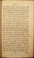 View image of 77her husband, and I weep with her; she caresses her child, and I weep still more! If I loved her, the name of this husband would be hateful to me, and I should be jealous even of her maternal affection....Alas! I know I have severely learnt what love is, and I am sure the sensations I now feel have nothing to do with it." As if, however, Walsingham, convinced of this himself, was conscious of the propriety there was in Rosalie's knowing it too, he now took every occasion when they were alone, and still more particularly when the Chevalier de Montagny was with them, to speak in stronger terms than ever of his widowed affections; and that he considered himself as wedded to the memory of his adored Leonora.—Rosalie seemed to hear him with mingled emotions of compassion and regard; she pitied the anguish he felt, and respected the constancy of his affection. He repeated one of the tenderest sonnets of Petrarch, and then an imitation of it, which he had written; and Rosalie, not-
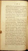 View image of 78withstanding the advantage the Italian language gives to this species of composition, preferred Walsingham's imitation. De Montagny, an unprejudiced spectator of these scenes, saw that Rosalie's heart was at present secure; but he every day fancied he had more reason to tremble for that of his friend. At length, after being twice the time they had calculated on their passage, they landed at Marseilles. Walsingham secured a lodging for Rosalie in the most retired part of the town, where he hired a female servant to attend her, and he went himself to an hotel. Her heart thanked him for this delicacy; nor was she less sensible of the kindness of the Chevalier de Montagny, who, purely from motives of friendship to Walsingham, and of compassion to her, had taken a voyage of some length, and attended to her the whole time with as much good-nature and humanity as if he had been her nearest relation. It was, therefore, with infinite regret that she bade him farewell, when, three days after her ar
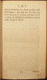 View image of 79 rival at Marseilles, he waited on her, with Walsingham, and told her his ship was then taking up its anchors, and that, in the evening, he should go on board, and get under weigh for Malta.
|
){kind=link}
){kind=link}
){kind=link}
){kind=link}
){kind=link}
){kind=link}
){kind=link}
){kind=link}
){kind=link}
){kind=link}
){kind=link}
){kind=link}
){kind=link}
){kind=link}
){kind=link}
){kind=link}
){kind=link}
){kind=link}